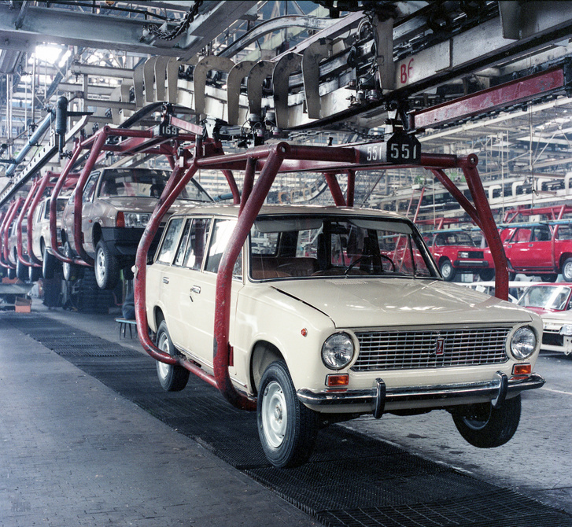
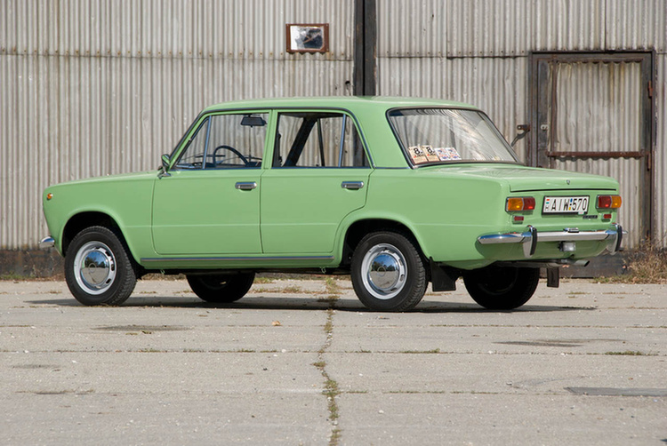

Törtenet

A Lada autómárka története mélyen gyökerezik a szovjet és később az orosz autóiparban. Az AvtoVAZ, amely a hivatalos neve a Lada autóknak, az egyik legnagyobb autógyártó volt a Szovjetunióban. Az AvtoVAZ-t 1966-ban alapították, a szovjet kormány és az olasz Fiat közös vállalkozásaként, az orosz autóipar modernizálásának részeként.
Az első Lada modell, amelyet a VAZ-2101-nek neveztek el, 1970-ben került piacra. Ez az autó a Fiat 124 modell orosz változata volt, és gyorsan népszerűvé vált a szovjet lakosság körében. A VAZ-2101 egyszerű kialakítással, megbízható műszaki megoldásokkal és megfizethető árakkal rendelkezett, ami nagyban hozzájárult sikeréhez.

Az 1970-es és 1980-as évek során további Lada modellek kerültek piacra, például a Lada Niva terepjáró, amely ma is népszerű a világ számos részén. A Niva különlegessége az volt, hogy elsőként mutatta be az összkerékhajtású rendszert kis személyautókban, ami kiváló terepjáró képességeket biztosított.
A hidegháború idején a Lada autók nemcsak a Szovjetunióban, hanem a kelet-európai országokban is nagyon népszerűek voltak, és exportálták őket az egész világra. A Lada autók hírnevét sokszor az egyszerűségük, megbízhatóságuk és alacsony fenntartási költségeik alapján alapozták meg.

A 2000-es években az AvtoVAZ számos kihívással szembesült, többek között a minőségi problémákkal és a versenyképesség csökkenésével a globális autópiacon. Azonban az AvtoVAZ folyamatosan fejlesztette modelljeit és gyártási folyamatait, és a Lada autók továbbra is népszerűek maradtak az orosz piac és más régiókban.
Összességében a Lada autómárka egyedülálló helyet foglal el az autóipar történetében. A Lada autók sokak számára jelentik a megbízhatóságot, a praktikusságot és a megfizethetőséget, és a márkának hosszú és gazdag történelme van, amely továbbra is inspirációt nyújt az autóiparban.